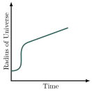

Shapes and Fates of the Universe
Jed Rembold
April 23, 2024
Announcements
- Be working on HW5!
- You have everything you need after today
- Final Projects
- Groupings being sent out, along with guide
- Upcoming
- Thursday: Workday, for either project planning or homework. I’ll be in this room for the usual time.
- Tuesday: Quiz 3, scheduled group meeting with me to discuss project proposals, workday
- Tuesday, May 7th: Project presentations
Recap
- Using an MCMC package like
emceeormcmccan facilitate some actions or add some quality of life improvements - Hubble’s law showcases a relationship between the distance something
is from us and the rate at which it is moving away from us
- Primary explanation is that the universe as a whole is expanding
- Hubble’s constant gives us information about the rate of expansion
Today
- Ultimate Questions of the Universe
- Is it infinite?
- Is it curved or flat?
- Is the rate of expansion growing or shrinking?
- What do we know about the Big Bang?
Mass: Always the Answer
- The simplest GR models predict that the expansion of the universe should be slowing
- Big Bang caused an explosion of outward movement, but gravity slowly wins
- Rate would be dependent on the mass density parameter (\(\Omega\))
Curved Geometry
- The total mass density also determines the shape of the universe:
- \(\Omega > 1\) implies a positive curvature
- \(\Omega < 1\) implies a negative curvature
- \(\Omega = 1\) implies no curvature (flat)
- Later we will specify this more directly with an \(\Omega_k\) value, but the above holds for overall values of \(\Omega\)
Measuring \(\Omega\)
- There are several approaches to measuring \(\Omega\):
- Look at all the mass, and try to figure out the density parameter
directly
- From visible mass: \(\Omega \approx 0.02\)
- Including dark matter: \(\Omega \approx 0.3\)
- Try to measure very precise triangles and look for angles that add up to \(>\) or \(< 180^\circ\)
- Look for changes in the expansion rate (Hubble constant)
- This “deceleration parameter” is often denoted \(q_0\)
- Look at all the mass, and try to figure out the density parameter
directly
A Geometrical Conundrum!
- Based on adding up all the mass we know of, including dark matter,
we get a density parameter of \(\Omega \approx
0.3\)
- This should imply a open, negative curvature universe
- Recent(ish) results from Baryon Acoustic Oscillations (BAO) experiments though predicts the universe to be flat, to within 0.4% certainty!
- Are we missing something? Or is some physical law flawed?
Returning to Hubble
- Simple GR models predict that gravity should slow the rate of expansion
- Looking at the Hubble relation out to very large distances then, we don’t expect as straight line
- Measuring that deviation from straight was a long-standing goal of observational cosmology
And the results are in!
- So what did astronomers finally see?
Oh @#$%! What?!
Observations at the turn of the millenia suggest that the expansion of the universe is not slowing
- The expansion rate is now higher than it was in the past!
- \(q_0 < 0\)
- Thus the universe may actually be older that the predicted Hubble time
Important to realize that none of the basic GR models predicted this. Everyone was taken completely off guard.
Was Einstein’s “cosmological constant” correct after all?
\[ R_{ab}-\frac{1}{2}Rg_{ab} = -8\pi T_{ab} + \Lambda g_{ab}\]
Explanations?
- For the universal expansion to be accelerating, we need something to be counteracting the attractive forces of gravity
- The most obvious candidate would be for some excessive energy that
is driving the universe outwards
- Similar to how increasing thermal energy of a gas in a balloon pushes the balloon outwards
- No idea yet of the source of this energy
- This commonly called dark energy
- Energies are tied to forces, but there are no known forces that would result in this invisible and excess energy!
How does Dark Energy help?
- Current models break the density parameter up into various
contributions:
- \(\Omega_m\) describes the portion of the density parameter coming from light and dark matter
- \(\Omega_k\) describes the curvature of the universe
- \(\Omega_\Lambda\) describes the portion of the density parameter coming from dark energy
- The sum of all contributions must sum to 1, indicating that we have accounted for everything
- Currently GR models can solve for Hubble’s constant in terms of these parameters and the redshift \(z\): \[ H(z) = H_0\sqrt{\Omega_m(1 + z)^3 + \Omega_k(1+z)^2 + \Omega_\Lambda} \]
Revamped Hubble
- Hubble’s constant changes with redshift (\(z\)), because when looking at objects
further away, we are looking at them from a much earlier era of the
universe!
- The speed of light is constant, and thus the light we measure from extremely distant objects was emitted much earlier in the lifetime of the universe, when the expansion of the universe was different
- Relating this back to the distance therefore requires taking into
account all the historical values of the Hubble constant enroute to its
current value
- Mathematically, this means needing to integrate \[ d = (1+z)c \int_0^z \frac{dz^\prime}{H(z^\prime)} \]
Flat and Expanding
- As you’ll see in the homework, fitting the density parameters to the
data currently predicts:
- \(\Omega_k \approx 0\), implying that the universe seems to be flat (in agreement with BAO measurements!)
- \(\Omega_\Lambda \approx 0.7\), impling that dark energy makes up a very large amount of the universe
- These results end up predicting an age of the universe that is very similar to the 14 billion years estimated from our constant expansion rate
Taking it Back
- Long ago the universe was denser
- And hotter
- Can we look back far enough to “see” this “era”?
How far back COULD we see?
- Assuming perfect and huge telescopes, how far back could we see?
- Early universe was very very hot
- Hot enough for fusion
- Hot enough that particles are charged (ionized)
- Fusion releases radiation that interacts with charged particles
- Light gets scattered \(\Rightarrow\) opaque
- Once the universe cooled enough for non-ionized atoms to form,
radiation no longer interacts
- Can travel long distances without scattering, becoming transparent
- The transition called Recombination
Recombination
- Recombination is when the universe cooled to a point that atoms could become un-ionized
- Allowed photons (radiation) to pass through unhindered
- Allows the universe to become transparent (mostly)
- Models predict recombination should have happened several hundred thousand years after the big bang
Background Radiation
- Such an age would predict a great distance from us, and thus a very high redshift (\(z\approx 1100\))
- If the universe was originally as hot and glowing as a star:
- light should be redshifted all the way into microwave wavelengths these days
- 1965: Found a weird radio signal coming equally from all parts of
the universe
- Like a background noise
- Cleaning or calibrating their telescope couldn’t get rid of it!
- Now known as the Cosmic Microwave Background, or CMB
The Cosmic Microwave Background
The Cosmic Microwave Background
The Cosmic Microwave Background

The Cosmic Microwave Background
CMB Observations
- Originally about 3000K, now about 2.7260K
- The different colors indicate different temperatures
- Differ by less than \(1\times10^{-5}\)K!
- Incredibly smooth
- This is the furthest we can look back directly
CMB Conclusions
- The early universe was much smoother than it is today
- We see temperature variations of thousands of kelvin, not \(10^{-5}\)…
- The early universe was still not perfectly smooth
- Some matter was still clumped before stars and galaxies began to form
- The sizes of these hot and cold patches serve as a valuable tool for model fitting
Peering Past the CMB
- Could we peer back further than the CMB?
- Not using radiation, for sure, but other methods?
- Neutrinos
- Can we observe enough coming from that time to make a reasonable picture?
- Gravity Waves
- Recently confirmed to have been observed
- Fluctuations in space-time, so “opacity” wouldn’t matter
- How can we best use them? Still extremely new (and exciting!)
- Neutrinos
Questions from the CMB
- There are some issues the CMB data raises that need to be answered
- The Lumpy Problem (Anisotropy): Why is the universe so smooth on large scales but so lumpy on small scales?
- The Flatness Problem: There are infinitely more ways to be curved than flat, so what are the odds that we ended up with a flat universe?
- The Horizon Problem: Things on opposite sides of the universe look similar, but they should have had no way to “communicate”, so how did they stay similar?
Inflation! A issue since day 1…
- Theorized that there must have been a period of extreme expansion in the very early universe
- Growing by approximately 58 orders of magnitude in maybe \(10^{-32}\) seconds…
- Solves all three issues:
- Anything curved looks flat when large enough
- Opposite sides of universe could “talk” before inflation, equalizing
- Quantum fluctuations in the early universe got smeared out in the expansion
